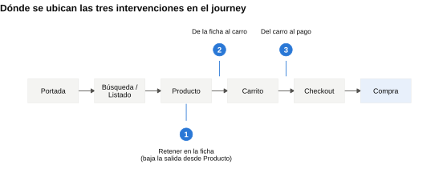
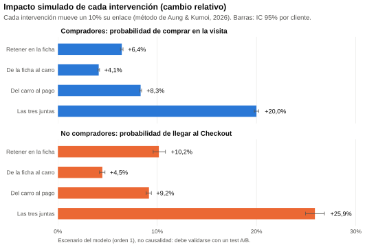

¿Qué 2-3 intervenciones priorizar y en qué estado del journey ubicarlas?
Anexo de la Pregunta 6 del desafío Falabella. Usa la misma cadena de Markov de P4 (orden 1, con autotransiciones, julio 2026) y simula, con el método de Aung & Kumoi (2026), qué pasa si un enlace del mapa mejora 10%. Intervalos del 95% por bootstrap por cliente (500 réplicas).
- Retener en la ficha (Producto): compradores +6,4% [6,3–6,6]; no compradores +10,2% [9,6–10,8].
- Del carro al pago (Carrito): compradores +8,3% [8,2–8,4]; no compradores +9,2% [8,9–9,4].
- De la ficha al carro (Producto → Carrito): compradores +4,1% [4,0–4,2]; no compradores +4,5% [4,2–4,8].
Cambios relativos. Compradores: probabilidad de comprar en la visita (base 8,74%). No compradores: no compran en julio por definición, así que se mide la probabilidad de llegar al Checkout (base 2,01%).
Por ende, el foco está en Producto y Carrito, los mismos estados donde P5 encontró la mayor fuga. Son escenarios del modelo, no efectos causales: cada intervención debe probarse con un test A/B.

Método: simular un cambio en el mapa
- Mejorar un enlace a la vez en 10% relativo. Ej.: Carrito → Checkout en compradores pasa de 29,30% a 32,23%. Lo que se suma (2,93 pp) se descuenta de las otras salidas del Carrito hacia estados de navegación, en proporción a su tamaño. No se tocan la autotransición ni las salidas a Compra o Abandono (Tabla 1).
- Retener (bajar la fuga): la salida a Abandono baja 10% relativo y esa probabilidad se reparte, en proporción, en las otras salidas hacia estados de navegación. Es la misma fórmula aplicada al enlace de salida.
- Recalcular el resultado. Con la matriz modificada se separan los estados de navegación (Q) de los finales (R), se calcula B = (I − Q)−1R (probabilidad de terminar en cada estado final) y se pondera por dónde empiezan las visitas (l). Impacto: δ = l′(B′ − B), la ecuación 5 de Aung & Kumoi.
- Barrer todos los enlaces (46 en compradores y 45 en no compradores, con probabilidad original de al menos 2%) y ordenarlos por impacto. Las tres intervenciones son las tres primeras del ranking en ambos grupos.
| Desde Carrito hacia… | Antes (%) | Después (%) |
|---|---|---|
| Producto | 40,58 | 38,54 |
| Checkout | 29,30 | 32,23 |
| Abandono | 10,78 | 10,78 (no cambia) |
| Búsqueda | 7,67 | 7,28 |
| Listado | 4,20 | 3,99 |
| Portada | 3,21 | 3,05 |
| Agregar al carro | 1,10 | 1,05 |
| Carrito (se queda) | 1,02 | 1,02 (no cambia) |
| Cuenta y servicios | 0,89 | 0,84 |
| Otros | 0,79 | 0,75 |
| Compra | 0,45 | 0,45 (no cambia) |
Tabla 1. Fila del Carrito en compradores, antes y después de mejorar Carrito → Checkout en 10%. En no compradores el mismo cambio lleva Carrito → Checkout de 11,78% a 12,96%.
Por qué Aung & Kumoi y no Lee (2020)
- Aung & Kumoi (2026) modifican un enlace del mapa y miden cuánto cambia la conversión, con una cadena de Markov absorbente de orden 1 sobre clics (páginas = estados; conversión y salida = absorbentes), igual que la nuestra. Ellos quitan las autotransiciones; aquí da lo mismo (ver Confiabilidad).
- Lee (2020) modela búsquedas de reservas con una cadena de Markov en tiempo continuo (buscar, salir, reservar) para estimar qué factores llevan a reservar. Solo pudimos revisar el resumen publicado y ahí no aparece una simulación de intervenciones; además necesitaría tiempos entre clics y variables del producto que no usamos. Por eso no se usa para P6.
- Por qué 10%: es un tamaño de referencia para comparar enlaces entre sí, no una meta. El paper también usa cambios fijos. Con 5% o 20% el impacto escala casi en proporción y el orden no cambia (ver Confiabilidad).
Ranking: impacto de mejorar cada enlace
Cambio relativo en el resultado de cada grupo si ese enlace mejora 10%. Orden 2 = misma simulación en la cadena que también mira el estado anterior. Probabilidad original = lectura por clic de la matriz principal (con autotransiciones).
Compradores · probabilidad de comprar en la visita
| # | Enlace modificado | Probabilidad original (%) | Impacto orden 1 | Impacto orden 2 | # en orden 2 |
|---|---|---|---|---|---|
| 1 | Carrito → Checkout (sube 10%) | 29,0 | +8,33% | +8,06% | 2 |
| 2 | Producto → Abandono (baja 10%) | 13,0 | +6,43% | +9,21% | 1 |
| 3 | Producto → Carrito (sube 10%) | 9,0 | +4,11% | +5,34% | 3 |
| 4 | Carrito → Abandono (baja 10%) | 11,0 | +1,67% | +2,21% | 4 |
| 5 | Portada → Carrito (sube 10%) | 12,0 | +1,46% | +1,49% | 6 |
| 6 | Búsqueda → Abandono (baja 10%) | 11,0 | +1,14% | +1,58% | 5 |
| 7 | Portada → Abandono (baja 10%) | 11,0 | +0,98% | +1,05% | 8 |
| 8 | Cuenta y servicios → Abandono (baja 10%) | 26,0 | +0,90% | +0,78% | 10 |
Ver el resto de los enlaces (compradores)
| # | Enlace modificado | Probabilidad original (%) | Impacto orden 1 | Impacto orden 2 | # en orden 2 |
|---|---|---|---|---|---|
| 9 | Listado → Abandono (baja 10%) | 14,0 | +0,77% | +0,95% | 9 |
| 10 | Checkout → Carrito (sube 10%) | 17,0 | +0,71% | 0,00% | 22 |
| 11 | Agregar al carro → Carrito (sube 10%) | 13,0 | +0,39% | +0,74% | 11 |
| 12 | Búsqueda → Carrito (sube 10%) | 3,0 | +0,37% | +0,41% | 13 |
| 13 | Checkout → Abandono (baja 10%) | 5,0 | +0,26% | +0,54% | 12 |
| 14 | Listado → Carrito (sube 10%) | 4,0 | +0,25% | +0,24% | 15 |
| 15 | Otros → Carrito (sube 10%) | 7,0 | +0,08% | +0,13% | 16 |
| 16 | Otros → Abandono (baja 10%) | 7,0 | +0,07% | +0,09% | 18 |
| 17 | Agregar al carro → Abandono (baja 10%) | 2,0 | +0,04% | +0,10% | 17 |
| 18 | Otros → Búsqueda (sube 10%) | 3,0 | -0,01% | -0,01% | 23 |
| 19 | Otros → Producto (sube 10%) | 9,0 | -0,01% | -0,03% | 25 |
| 20 | Cuenta y servicios → Listado (sube 10%) | 2,0 | -0,02% | 0,00% | 21 |
| 21 | Portada → Otros (sube 10%) | 3,0 | -0,02% | +0,05% | 19 |
| 22 | Otros → Cuenta y servicios (sube 10%) | 4,0 | -0,02% | -0,03% | 24 |
| 23 | Búsqueda → Portada (sube 10%) | 2,0 | -0,03% | -0,08% | 28 |
| 24 | Listado → Portada (sube 10%) | 5,0 | -0,03% | -0,10% | 30 |
| 25 | Cuenta y servicios → Producto (sube 10%) | 9,0 | -0,03% | -0,06% | 27 |
| 26 | Agregar al carro → Búsqueda (sube 10%) | 5,0 | -0,03% | -0,18% | 33 |
| 27 | Búsqueda → Listado (sube 10%) | 2,0 | -0,04% | -0,08% | 29 |
| 28 | Listado → Búsqueda (sube 10%) | 7,0 | -0,06% | -0,05% | 26 |
| 29 | Otros → Portada (sube 10%) | 21,0 | -0,07% | -0,11% | 31 |
| 30 | Portada → Producto (sube 10%) | 20,0 | -0,11% | -0,27% | 35 |
| 31 | Cuenta y servicios → Portada (sube 10%) | 13,0 | -0,11% | -0,13% | 32 |
| 32 | Portada → Listado (sube 10%) | 12,0 | -0,20% | -0,18% | 34 |
| 33 | Producto → Portada (sube 10%) | 2,0 | -0,31% | -0,72% | 39 |
| 34 | Carrito → Portada (sube 10%) | 3,0 | -0,33% | -0,41% | 36 |
| 35 | Portada → Búsqueda (sube 10%) | 21,0 | -0,33% | +0,03% | 20 |
| 36 | Checkout → Producto (sube 10%) | 12,0 | -0,42% | +0,26% | 14 |
| 37 | Producto → Agregar al carro (sube 10%) | 6,0 | -0,42% | +1,11% | 7 |
| 38 | Carrito → Listado (sube 10%) | 4,0 | -0,44% | -0,55% | 38 |
| 39 | Listado → Producto (sube 10%) | 58,0 | -0,64% | -0,46% | 37 |
| 40 | Carrito → Búsqueda (sube 10%) | 8,0 | -0,83% | -1,05% | 40 |
| 41 | Portada → Cuenta y servicios (sube 10%) | 19,0 | -0,99% | -1,41% | 41 |
| 42 | Producto → Listado (sube 10%) | 7,0 | -1,40% | -2,51% | 43 |
| 43 | Agregar al carro → Producto (sube 10%) | 75,0 | -1,50% | -2,18% | 42 |
| 44 | Búsqueda → Producto (sube 10%) | 64,0 | -2,50% | -3,64% | 44 |
| 45 | Producto → Búsqueda (sube 10%) | 14,0 | -3,31% | -5,10% | 45 |
| 46 | Carrito → Producto (sube 10%) | 41,0 | -7,07% | -6,45% | 46 |
No compradores · probabilidad de llegar al Checkout
| # | Enlace modificado | Probabilidad original (%) | Impacto orden 1 | Impacto orden 2 | # en orden 2 |
|---|---|---|---|---|---|
| 1 | Producto → Abandono (baja 10%) | 27,0 | +10,17% | +17,20% | 1 |
| 2 | Carrito → Checkout (sube 10%) | 12,0 | +9,17% | +8,75% | 2 |
| 3 | Producto → Carrito (sube 10%) | 4,0 | +4,48% | +6,19% | 3 |
| 4 | Carrito → Abandono (baja 10%) | 21,0 | +2,74% | +3,62% | 4 |
| 5 | Portada → Carrito (sube 10%) | 8,0 | +1,93% | +1,70% | 7 |
| 6 | Listado → Abandono (baja 10%) | 30,0 | +1,41% | +1,80% | 5 |
| 7 | Portada → Abandono (baja 10%) | 18,0 | +1,07% | +1,31% | 9 |
| 8 | Búsqueda → Abandono (baja 10%) | 16,0 | +0,97% | +1,78% | 6 |
Ver el resto de los enlaces (no compradores)
| # | Enlace modificado | Probabilidad original (%) | Impacto orden 1 | Impacto orden 2 | # en orden 2 |
|---|---|---|---|---|---|
| 9 | Agregar al carro → Carrito (sube 10%) | 16,0 | +0,70% | +1,24% | 10 |
| 10 | Cuenta y servicios → Abandono (baja 10%) | 20,0 | +0,18% | +0,23% | 13 |
| 11 | Otros → Carrito (sube 10%) | 3,0 | +0,12% | +0,25% | 12 |
| 12 | Producto → Agregar al carro (sube 10%) | 3,0 | +0,09% | +1,49% | 8 |
| 13 | Agregar al carro → Abandono (baja 10%) | 7,0 | +0,09% | +0,27% | 11 |
| 14 | Otros → Abandono (baja 10%) | 10,0 | +0,09% | +0,15% | 14 |
| 15 | Cuenta y servicios → Carrito (sube 10%) | 2,0 | +0,07% | +0,05% | 16 |
| 16 | Listado → Portada (sube 10%) | 4,0 | +0,03% | -0,07% | 27 |
| 17 | Búsqueda → Portada (sube 10%) | 2,0 | +0,02% | -0,07% | 26 |
| 18 | Checkout → Carrito (sube 10%) | 34,0 | 0,00% | 0,00% | 17 |
| 18 | Checkout → Producto (sube 10%) | 17,0 | 0,00% | 0,00% | 17 |
| 18 | Checkout → Portada (sube 10%) | 5,0 | 0,00% | 0,00% | 17 |
| 18 | Checkout → Abandono (baja 10%) | 19,0 | 0,00% | 0,00% | 17 |
| 22 | Cuenta y servicios → Otros (sube 10%) | 2,0 | -0,01% | -0,01% | 22 |
| 23 | Cuenta y servicios → Listado (sube 10%) | 5,0 | -0,03% | -0,04% | 24 |
| 24 | Cuenta y servicios → Producto (sube 10%) | 7,0 | -0,03% | -0,03% | 23 |
| 25 | Portada → Otros (sube 10%) | 3,0 | -0,04% | +0,10% | 15 |
| 26 | Otros → Búsqueda (sube 10%) | 9,0 | -0,05% | -0,16% | 30 |
| 27 | Otros → Portada (sube 10%) | 17,0 | -0,05% | -0,30% | 32 |
| 28 | Búsqueda → Listado (sube 10%) | 2,0 | -0,05% | -0,13% | 29 |
| 29 | Otros → Producto (sube 10%) | 11,0 | -0,05% | -0,05% | 25 |
| 30 | Listado → Búsqueda (sube 10%) | 6,0 | -0,07% | -0,01% | 21 |
| 31 | Cuenta y servicios → Portada (sube 10%) | 16,0 | -0,08% | -0,07% | 28 |
| 32 | Agregar al carro → Búsqueda (sube 10%) | 9,0 | -0,08% | -0,36% | 33 |
| 33 | Portada → Cuenta y servicios (sube 10%) | 6,0 | -0,10% | -0,17% | 31 |
| 34 | Carrito → Portada (sube 10%) | 5,0 | -0,62% | -0,72% | 36 |
| 35 | Portada → Listado (sube 10%) | 16,0 | -0,63% | -0,68% | 34 |
| 36 | Portada → Producto (sube 10%) | 23,0 | -0,75% | -0,83% | 38 |
| 37 | Carrito → Listado (sube 10%) | 7,0 | -0,95% | -1,12% | 39 |
| 38 | Portada → Búsqueda (sube 10%) | 26,0 | -0,97% | -0,69% | 35 |
| 39 | Carrito → Búsqueda (sube 10%) | 9,0 | -1,15% | -1,48% | 40 |
| 40 | Listado → Producto (sube 10%) | 46,0 | -1,54% | -0,78% | 37 |
| 41 | Agregar al carro → Producto (sube 10%) | 63,0 | -1,59% | -2,41% | 41 |
| 42 | Producto → Listado (sube 10%) | 8,0 | -2,28% | -5,01% | 42 |
| 43 | Búsqueda → Producto (sube 10%) | 57,0 | -3,66% | -5,45% | 43 |
| 44 | Producto → Búsqueda (sube 10%) | 14,0 | -4,39% | -8,61% | 44 |
| 45 | Carrito → Producto (sube 10%) | 42,0 | -10,79% | -10,84% | 45 |
Lectura: las tres primeras son las mismas en ambos grupos y en ambos órdenes. El cuarto enlace (retener en el Carrito) queda lejos: +1,7% en compradores y +2,7% en no compradores. Los enlaces con impacto negativo son los que alejan del pago (ej. volver del Carrito a Producto). Correlación de rangos orden 1 vs orden 2: 0,87 en compradores y 0,96 en no compradores.
Las tres intervenciones

Compradores · probabilidad de comprar en la visita
| Intervención | Base | Con la intervención | Cambio (pp) [IC 95%] | Cambio relativo [IC 95%] | Cambio relativo, orden 2 |
|---|---|---|---|---|---|
| Retener en la ficha | 8,74% | 9,31% | +0,56 [0,55–0,58] | +6,4% [6,3–6,6] | +9,2% |
| De la ficha al carro | 8,74% | 9,10% | +0,36 [0,35–0,37] | +4,1% [4,0–4,2] | +5,3% |
| Del carro al pago | 8,74% | 9,47% | +0,73 [0,71–0,74] | +8,3% [8,2–8,4] | +8,1% |
| Las tres juntas | 8,74% | 10,49% | +1,75 [1,71–1,79] | +20,0% [19,8–20,2] | +24,1% |
No compradores · probabilidad de llegar al Checkout
| Intervención | Base | Con la intervención | Cambio (pp) [IC 95%] | Cambio relativo [IC 95%] | Cambio relativo, orden 2 |
|---|---|---|---|---|---|
| Retener en la ficha | 2,01% | 2,22% | +0,20 [0,18–0,24] | +10,2% [9,6–10,8] | +17,2% |
| De la ficha al carro | 2,01% | 2,11% | +0,09 [0,08–0,11] | +4,5% [4,2–4,8] | +6,2% |
| Del carro al pago | 2,01% | 2,20% | +0,18 [0,16–0,22] | +9,2% [8,9–9,4] | +8,8% |
| Las tres juntas | 2,01% | 2,54% | +0,52 [0,45–0,62] | +25,9% [24,9–26,9] | +35,7% |
Las tres juntas se aplican una después de otra sobre la misma matriz. Los ejemplos de qué hacer en cada estado están en la Tabla de factibilidad; son opciones a evaluar, no una descripción del sitio actual de Falabella.
Respaldo en P5: al dejar Producto se va el 25,0% de los compradores y el 47,2% de los no compradores (la mayor fuga). Desde el Carrito pasa al Checkout el 29,3% de los compradores y el 11,8% de los no compradores. Desde Producto pasa al Carrito el 8,9% y el 3,6%.
Factibilidad
| Intervención | Pros | Contras y riesgos | Costo y dificultad técnica | Cómo probarla |
|---|---|---|---|---|
| 1. Retener en la ficha (Producto) | Ataca la mayor fuga en ambos grupos; es la de mayor impacto en no compradores. | Una ficha recargada puede distraer. No toda salida es un cliente perdido: el 96% de los compradores tiene más de una visita. | Media: diseño y contenido de la ficha; requiere tener despacho y stock disponibles en la ficha. | Test A/B de la ficha. KPI: probabilidad de irse al dejar Producto y compra por visita. |
| 2. Del carro al pago (Carrito) | Mayor impacto en compradores; es donde el no comprador más se queda atrás. | Tocar el paso al pago es delicado: un error baja la conversión. Mostrar el despacho antes puede espantar a algunos. | Media-alta: equipo de checkout y pagos; más pruebas antes de salir. | Test A/B del carro. KPI: paso Carrito → Checkout y compra por visita. |
| 3. De la ficha al carro (Producto → Carrito) | Barata y rápida de implementar. | Menor impacto. Puede inflar carros que nunca se pagan. | Baja: cambio de interfaz. | Test A/B. KPI: paso Producto → Carrito, cuidando que no baje Carrito → Checkout. |
Costo y dificultad son una evaluación cualitativa: no tenemos costos reales de Falabella.
Confiabilidad
¿El modelo reproduce la base?
| Grupo | Resultado | Observado en los datos | Orden 1 | Orden 2 | IC 95% orden 1 |
|---|---|---|---|---|---|
| Compradores | Compra en la visita | 8,74% | 8,74% | 8,74% | [8,55–8,93] |
| No compradores | Llega al Checkout | 1,52% | 2,01% | 1,81% | [1,71–2,40] |
En compradores la cadena reproduce exactamente la compra por visita observada (desde la entrada, el flujo se conserva). En no compradores sobreestima la llegada al Checkout; por eso se reportan cambios relativos.
Tamaño del cambio
| Grupo | Intervención | 5% | 10% (principal) | 20% |
|---|---|---|---|---|
| Compradores | Retener en la ficha | +3,1% | +6,4% | +13,6% |
| Compradores | De la ficha al carro | +2,1% | +4,1% | +8,2% |
| Compradores | Del carro al pago | +4,2% | +8,3% | +16,6% |
| Compradores | Las tres juntas | +9,7% | +20,0% | +42,9% |
| No compradores | Retener en la ficha | +5,0% | +10,2% | +21,5% |
| No compradores | De la ficha al carro | +2,2% | +4,5% | +8,9% |
| No compradores | Del carro al pago | +4,6% | +9,2% | +18,3% |
| No compradores | Las tres juntas | +12,3% | +25,9% | +57,6% |
Cambio relativo. El impacto escala casi en proporción y el orden entre intervenciones no cambia.
Con vs sin autotransiciones
| Grupo | Escenario | Con autotransiciones | Sin autotransiciones | Diferencia |
|---|---|---|---|---|
| Compradores | Base | 8,74% | 8,74% | 0,00 |
| Compradores | Retener en la ficha | 9,31% | 9,31% | 0,00 |
| Compradores | De la ficha al carro | 9,10% | 9,10% | 0,00 |
| Compradores | Del carro al pago | 9,47% | 9,47% | 0,00 |
| Compradores | Las tres juntas | 10,49% | 10,49% | 0,00 |
| No compradores | Base | 2,01% | 2,01% | 0,00 |
| No compradores | Retener en la ficha | 2,22% | 2,22% | 0,00 |
| No compradores | De la ficha al carro | 2,11% | 2,11% | 0,00 |
| No compradores | Del carro al pago | 2,20% | 2,20% | 0,00 |
| No compradores | Las tres juntas | 2,54% | 2,54% | 0,00 |
Idéntico: quedarse varios clics en el mismo estado no cambia hacia dónde se termina yendo la visita, así que B no depende de las autotransiciones.
- Orden 1 vs orden 2: las mismas tres quedan arriba. Orden 1 es conservador para retener en la ficha (+6,4% vs +9,2% en compradores; +10,2% vs +17,2% en no compradores), lo que calza con que Producto es el estado donde más importa de dónde viene el cliente (ver Prueba de memoria). En compradores, orden 2 invierte el orden entre las dos primeras, así que no se jerarquizan entre sí.
- Muestra balanceada: las cifras son cambios relativos dentro de cada grupo, no la conversión real del sitio.
- Escenario, no causalidad: el modelo supone que mejorar un enlace no cambia el resto del recorrido. Indica dónde conviene probar; el efecto real se mide con un test A/B.
Prueba de memoria por estado (M.1, prueba C)
Pregunta: ¿cuánto cambia el siguiente paso del cliente si, además de saber dónde está, sé de dónde venía?
- Para cada estado X se calcula la distribución del siguiente paso con orden 1: P(siguiente | X).
- Para cada estado anterior a, la misma distribución con orden 2: P(siguiente | a, X).
- Se mide cuánto difieren con la distancia de variación total: ½ Σ |P(siguiente | a, X) − P(siguiente | X)|. Va de 0 (idénticas) a 100 pp (nada en común) y es la probabilidad que habría que mover para pasar de una distribución a la otra.
- Se promedia sobre los estados anteriores, ponderando por cuántas transiciones llegan desde cada uno (solo anteriores con al menos 100 casos).
| Estado | Compradores | No compradores | Compradores sin autotransiciones | No compradores sin autotransiciones |
|---|---|---|---|---|
| Producto | 28,9 pp | 29,6 pp | 40,4 pp | 40,2 pp |
| Otros | 20,6 pp | 20,4 pp | 19,9 pp | 29,4 pp |
| Checkout | 15,1 pp | 12,1 pp | 5,2 pp | 2,1 pp |
| Carrito | 14,1 pp | 16,0 pp | 13,6 pp | 15,8 pp |
| Listado | 13,4 pp | 20,3 pp | 11,4 pp | 18,4 pp |
| Búsqueda | 12,9 pp | 17,3 pp | 9,5 pp | 12,9 pp |
| Agregar al carro | 12,0 pp | 5,9 pp | 10,7 pp | 5,7 pp |
| Cuenta y servicios | 11,2 pp | 13,2 pp | 4,2 pp | 4,4 pp |
| Portada | 8,2 pp | 6,6 pp | 7,8 pp | 6,6 pp |
Lectura: en Producto, saber de dónde viene el cliente cambia en promedio unos 29 pp la distribución de su siguiente paso (unos 40 pp si no se cuentan los clics que se quedan en Producto). Es el estado con más memoria en ambos grupos; por eso orden 1 es conservador para la intervención en la ficha.
Descargas y reproducibilidad
- Script (R): fase8_p6_intervenciones.R. Lee df_falabella_estados.rds sin modificarlo y guarda las tablas en la carpeta resultados_p6.
- Todos los resultados de esta página: p6_anexo.json.
- Anexo de P5 (fugas): anexo-p5.
Referencias: Aung & Kumoi (2026), First-Order Absorbing Markov Chain Analysis for Web Navigation and Conversion Rate Optimization, IEEE Access. Lee (2020), Will this search end up with booking?, Journal of Tourism Analysis.
Anexo P6 · Desafío 2 Customer Journey Falabella · Datos: julio 2026, 10.000 clientes. Cálculo propio en R.